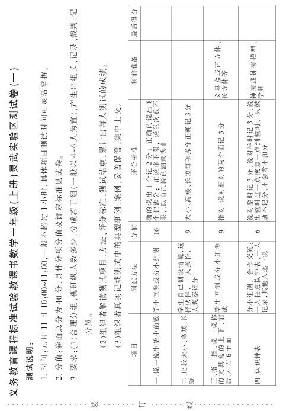

小学数学实验年级考试改革的尝试与反思 [1]
考试改革，是基础教育课程改革的重要组成部分。如何发挥考试的导向功能，促进学生的全面发展呢？我们根据多年教学质量监测的经验积累及课程改革对学生评价的要求，结合灵武实际，首先在课改实验年级进行了考试改革的尝试。我们改革的基本思路就是充分发挥考试的导向功能，赋考试以新的内涵，在继续传统考试的有些有益做法的基础上进行了五个方面的改变，其目的是“全面考察学生的学习状况，激励学生的学习热情，促进学生的全面发展”。下面就我们的一些具体做法介绍给大家。
一、改变试卷的编制
过去对学生的学业考试，一般都是一份试卷，一次完成。现在我们把试卷分为三部分：一是小组合作完成部分（称为卷一）；二是独立完成的部分（称为卷二）；三是选作部分（称为卷三）。
小组合作完成部分：主要是些实践性、操作性试题，如，说一说、指一指、比一比、拨一拨（一年级上册）。说一说，就是让学生说生活中的数。一名学生说，其他学生做记录、评判。一名学生说完后，另一名学生接着说。指一指，拿出自己的铅笔盒或课本，指出它的上面、下面、左面、右面。比一比，自己选择比的对象，比长短、比高矮等。拨一拨，一位学生说时间，另一位学生拨钟表，其他同学观察，看他拨的对不对。这些具体的活动可考察学生对有关知识的理解和掌握，同时让学生感受小组合作学习的必要性。独立完成部分：口算题，给一定数量的题（一般在50道左右），让学生在限定的时间内（3分钟～5分钟），看能完成多少。根据各年级的口算标准，看是否达标。其他题，主要是给学生提供情境，让学生自己提出数学问题，自己解决。如，让学生看树上所结苹果的号数，写出加法算式、减法算式；又如，给出一些商品的单价，让学生估计小明拿了20元钱，可能买那些物品，写出买物品的计算过程等。
选作部分：主要提供一些开放性试题，如60=（）+（），54=（）-（），（）〇（）=15等，供学生选做，根据自己的能力，能做多少做多少，上不封顶，以体现出“不同的人在数学上得到不同的发展”的理念。
这三部分试卷，构成了阶段性考试的整体，以总计分作为这次考试的学业成绩。
二、改变试题类型
试卷的命题，我们严格以《全日制义务教育数学课程标准》（实验稿）为依据，注重对学生分析问题和解决问题能力的考查，注重对学生创新能力和实践能力的考查。如，按规律填空：口12口；写出得数是8的算式；现有50元、20元、10元的人民币，想一想怎样可以凑出80元钱？……。试题类型除了保留传统的填空题、判断题、计算题之外，还有连线题、画图题、测量题、试一试、议一议等，试题特别加强了与学生生活实际和社会实际之间的联系，切实体现数学来源于生活又应用于生活。如，数一数你身边的人或物，找一找生活中有哪些东西表面的形状和△、□、〇相似，说一说生活中的数学问题。又如，试一试，如果你当家，妈妈给你30元钱，你打算买什么？还剩多少钱？算一算装修房间需要的瓷砖数。另外，我们还注重了试题的各学科知识的整合。如，过新年了，你一定想给亲人、朋友、老师、同学送一张贺卡吧！打算送给谁呢？请你考虑好，然后动手设计一张精美的贺卡，相信你一定做得很出色！做完后，大家再算一算：假如每组6位同学，每人制作3张，一个小组共制作多少张？如果每人制作5张，一个小组制作多少张？如果每人制作8张呢？通过以上试题类型的变化，主要是给学生营造一个展示自我的平台，张扬学生的个性，使其内在潜能得到充分发挥。
三、改变试题的叙述方式
过去的考试由于过分强调甄别与选拔，考试往往严肃有余而活泼不足，试卷缺少人文性，学生考试有恐惧感、压抑感。现在考试，我们正在努力营造一种和平时课堂教学一样的氛围，让学生在宽松、和谐、愉快的环境中答卷。小组合作答卷，这样的氛围就比较好。学生独立答卷，我们增强了一些激励性、揭示性、趣味性语言。如：“相信自己，你会成功的！”“动脑筋、想一想，你肯定能解决这些问题。”“下面的计算都是你学过的基本计算，只要你细心，一定能算得又对又快。”又如，过去的判断题、改错题，我们现在这样叙述：“下面是小马虎完成的一次数学作业，请你当老师给他批阅一下，正确的在后面的括号里画‘√’，错误的画‘×’。”“请你到数学医院，给下面各题诊断一下，看有没有‘病’。”等等。这样的语气，这样的语言，学生听到或看到后将是怎样的感受呢？可想而知。
四、改变时间限定
过去的考试是在限定的时间内完成的，现在我们虽有时间规定，但不是统得太死。卷一一般是1小时，卷二是40分钟～60分钟，卷三是20分钟～30分钟。卷一根据有些题的要求，可以提前准备。如，讲自己的数学故事，可以提前一天准备；还有些实践活动——有关数据调查、测量等一般都安排在双休日，考试时间内仅是交流。这样尽量给学生创造条件，提供时间和空间。我们的目的不仅仅是答卷，更重要的是让学生经历这个过程，感受、体验数学与生活，与社会的紧密联系。
五、改变评价方式
考试结束后，怎样评价一个学生的学业成绩呢？我们做了这样几方面的探索。
（一）评语评价。评价主要是为了及时发现学生的进步和存在的问题并在此基础上促进学生发展。为此，我们要求每次考试、分析要追踪到每一个学生，指导要落到每一个环节。要让学生不仅知道错了，还要知道错在什么地方。
例1：409+55÷5=464÷5；8+7×2=30。
教师在错的部分画了一条横线，批语是：“应先算什么？”
例2：19×2×0=38。教师批语是：“0×任何数=0”。
例3：15×6×8=90×8=620。教师的批语是：“口诀记错了！”
例4：6t=（600）kg。教师的批语是：“1t=1000kg，不是100kg，请记住！”
例5：周长是42。教师的批语是：“记住，请写单位。”
对每份试卷，教师还进行总批。在一位学生的试卷上教师写道：“没想到你很自信，选择了C卷（挑战卷），虽然没考上100分，但是已证明了你进步了。上课如果再多与同伴交流，你会更棒的！”还有一位学生的试卷，教师这样写道：“你做题比以前认真了，只是在解应用题之前要认真读题，再想一想，这样动脑筋，你会更出色的！”这些字句体现了师情、爱心和期望，学生看到的是希望，得到的是前进的动力。
（二）延缓评价。当学生对自己的答卷感到不满意时，可以提出申请进行第二次答卷（这与过去的补考有本质的区别），这样操作起来麻烦一些，但值。因为这是给学生一次争取成功的机会，既保护了学生学习的积极性，又使学生对学好数学充满了信心。延缓评价时间虽然长了点，但有利于学生的发展。
（三）综合评价。对学生的学业成绩评价，不能仅靠一次考试来确定，应进行综合评价。我们将平时测查与期末测查结合起来，一般平时占60%，期末占40%。如果是学年测查，第一学期占40%，第二学期占60%。这样就使评价过程与学生学习过程紧密联系起来，使学生意识到平时学习的重要性。
（四）多元评价。现在的评价，不只是教师说了算，学生、家长都是评价的主体。小组合作学习，基本上都采用自评与互评的方式，最后的评价还要得到本人的认可，这样就避免了那些不客观、不公正的评价。每次考试完后，学生要把教师批阅的试卷带回家，征求家长对孩子教育的意见，家长和教师相互沟通，共同帮助学生认识自我，建立信心，争取更大的进步。经过两年考试改革的实践与探索，我们越来越感到这项改革的意义和价值，因为考试的导向功能已逐渐凸现，学生和教师明显变了，主要体现在下述几方面：
1.教师对考试改革的认识有进一步的提高。很多教师不仅关注考试改革，还申请立项，进行专题研究。不少学校出台了考试改革方案，有的方案还很有特色。如有的学校采用了学校统一抽测与学生选择考试相结合的方式。学校根据实际可以对某一学科、某一年级进行统一抽测，学生可以选择某一学科不同程度的A卷（达标卷）、B卷（提高卷）或C卷（挑战卷）进行考试。考试不理想的可以申请复考，直到满意为止。测试者认为：学生申请和再次测试的过程，就是学生在原有水平上提高的过程，就是逐步达到应达到的目标的过程，也是促进学生对自己的学习进行反思的过程，只要有利于学生的发展，我们就应该这样做。
2.学生参与面广，积极性高。学生对开放性试题、挑战性的试题兴趣极大，规定答卷时间到后，很多学生要求延长时间。“老师，再给我们一点时间，再给我们一次机会”的呼声此起彼伏，像这样的场景，如果不亲自到考场很难置信。在小组合作完成的测试中，如“记一记生活中的数”，一位同学说，一位同学记，有的用手指的方法计，有的用画道道的方法计……一位同学当裁判，他们既是被测者，又是测评者，每个人都是那样的兴奋，又是那样的自信，个个全身心的投入。如果没有课程改革，如果没有考试改革，是不可能有这种生动场面的。
3.教师的感觉不一样了。我们的考试改革与课堂教学改革同步进行，考试的指导思想变了，考试的形式变了，考试的题型变了，尤其是解决问题策略的多样化，答案不唯一，对教师提出了严峻的挑战，如果不改进教学方式，如果不把学习的主动权还给学生，让学生自由探究、相互交流，是很难适应课改需求的。每个教师，尤其是带实验班的教师都有紧迫感，为了每一位学生的发展，到底怎样工作？这是大家经常思考的问题，课改前后感觉截然不同。
当然，在操作过程中我们还有很多问题亟待解决，主要是：
1.加强学习，提高我们的认识水平和理论水平，要用一些前瞻性的理论指导我们的实践，确保我们的改革深入发展，沿着正确的轨迹进行。
2.如何建立具有地方特色的评价体系和考试制度，使学生、教师、家长、社会都能认可给以支持？
3.如何建立适应学生发展的考试题库，既有层次性又有区分度，满足各类学生的考试需求？
4.研究如何减轻教师过重的负担，又确保考试功能发挥的有效策略。
5.研究并处理好考试评价方式转变与管理方式转变的同步运行问题等。
总之，考试评价改革是师生家长都较为关注的热门话题，事关课改的顺利实施，我们热忱希望每位教育工作者积极思考、研究，多献计献策，推动评价改革的不断深入。
（附一年级（上册）、二年级（上册）测试卷）
